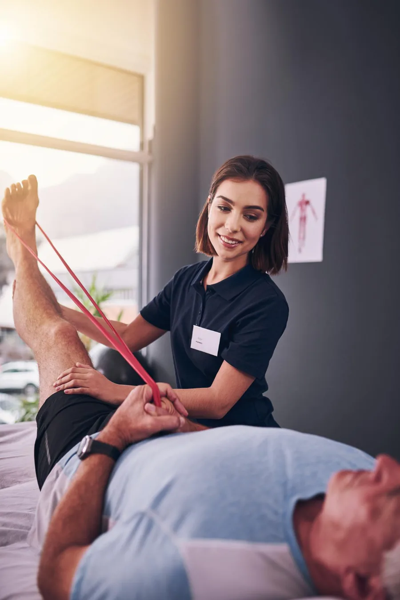

Dor tratada na origem
Investigação da cadeia inteira de movimento, não só do ponto doloroso.
A fisioterapia do Instituto Correr começa onde a maioria termina: na causa. Avaliamos a mecânica do seu movimento para resolver o problema, e não apenas o sintoma que ele produz.
Quase todo mundo já passou por uma sessão que aliviou na hora e não sustentou o resultado. Isso acontece quando o tratamento age sobre o local que dói sem investigar o que sobrecarregou aquele tecido.
Nossos fisioterapeutas trabalham sobre as alterações biomecânicas que, se não corrigidas, viram quadro crônico ou lesão de repetição. A avaliação é personalizada e guiada por protocolos científicos atuais.
O objetivo declarado do tratamento é um só: retorno breve e seguro às atividades cotidianas, com recuperação total e sem recidivas.

Investigação da cadeia inteira de movimento, não só do ponto doloroso.
Técnicas escolhidas pelo que a literatura mostra que funciona no seu tipo de caso.
Você entende cada etapa, participa das decisões e sabe o que esperar.
A alta acontece quando você volta ao que fazia antes, não quando a dor some.
Esta lista é um ponto de partida. A indicação definitiva sai da avaliação e, se o seu caso pedir outra abordagem, a gente diz.
Sua história, sua rotina, o que piora e o que já foi tentado. É metade do diagnóstico.
Testes de mobilidade, força e controle para achar a origem, não só o ponto que dói.
Técnicas, frequência e prazo definidos e explicados antes de começar.
Ajustes precisos que devolvem mobilidade às articulações e reorganizam a mecânica da coluna.
Ver maisEstúdio com aparelhos e acessórios, com séries desenhadas a partir da sua avaliação de movimento.
Ver maisTécnica que desativa pontos-gatilho e libera a fáscia muscular, reduzindo tensão e dor.
Ver maisMobilizações, manipulações e técnicas de tecidos moles aplicadas com raciocínio clínico.
Ver maisConte o que você está sentindo. Em uma sessão você entende a causa do problema e sai com um plano de tratamento definido.
Seg. a sex., das 7h às 12h e das 13h às 20h · Rua Frederico Busch Júnior, 101, Ed. Oswaldo Cruz